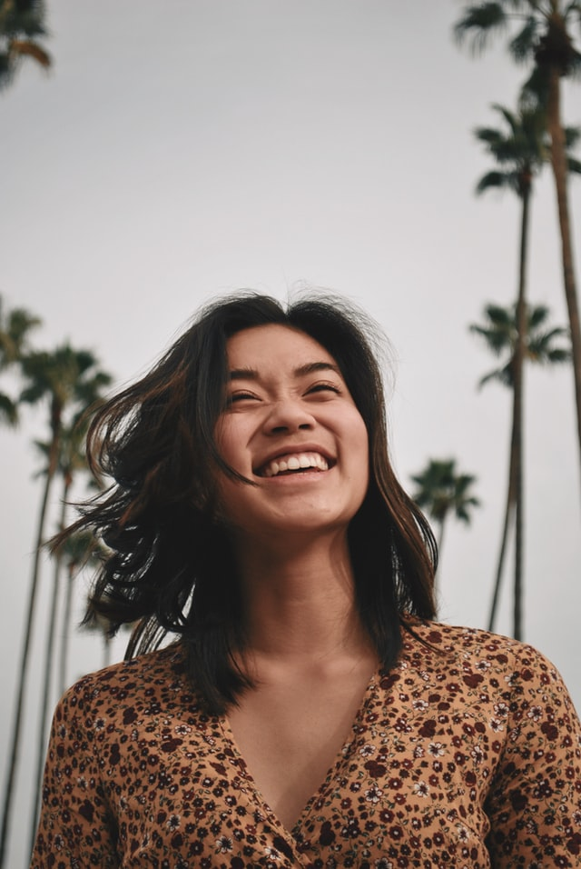
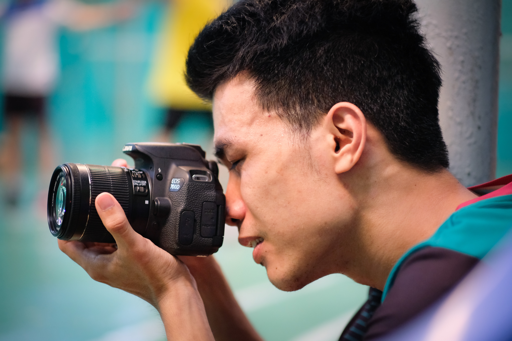
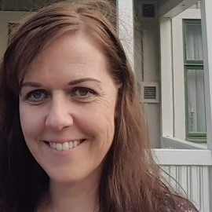
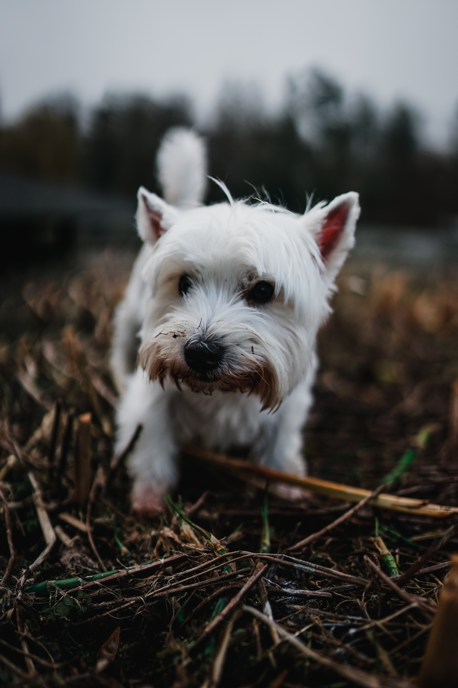

Om oss

Nikki Nyfiken
Nikki är VD och grundare av Annorlunda Resor AB och har så länge hon kan minnas alltid älskat
att resa. Hon brinner för att inspirera människor till äventyr och har en karriär inom
multisport bakom sig. Som inspiratör och coach har hon bidragit till många människors
framsteg i kajakpaddling, cykling, klättring och inlines. Nikki är ständigt på jakt efter
nästa upplevelse.

Rasmus Pålufén
Rasmus är en passionerad löpare som brinner för äventyr och att få fler att upptäcka det
underbara med i att springa i naturen. Han har en brokig bakgrund som dykinstruktör, lärare
och administrativ chef som gör honom perfekt lämpad för att ansvara för våra resor och
rekryteringar. Rasmus är även reseledare och guide på flera av våra resor.

Niklas Plåt
Niklas är utbildad fotograf och brinner för att ta den perfekta bilden. Han trivs bäst i
skogen med kamera, rygga och löparskor. Han duckar inte för tekniska stigar då han har många
års orientering på hög nivå bakom sig. Niklas är extremt detaljorienterad och har enorm
finess vid leverans av en produkt vilket säkerställer kvalitén på våra resor. Han medverkar
även som ledare på flera av våra resor.

Bettina Cash
Bettina är vår praktikant och ansvarar för vår webbplats. Hon har en bakgrund inom
finansbranschen och när hon inte vandrar eller springer i skogen, tar en kajaktur eller
sover under bar himmel så utbildar hon sig till webbprogrammerare och hoppas på en framtid
där hon får bygga hemsidor till mindre företag och organisationer.

Mila
Mila är vår kontorshund, alltid glad och redo för bus!
Nikki Nyfiken
Nikki är VD och grundare av Annorlunda Resor AB och har så länge hon kan minnas alltid älskat att resa. Hon brinner för att inspirera människor till äventyr och har en karriär inom multisport bakom sig. Som inspiratör och coach har hon bidragit till många människors framsteg i kajakpaddling, cykling, klättring och inlines. Nikki är ständigt på jakt efter nästa upplevelse.
Rasmus Pålufén
Rasmus är en passionerad löpare som brinner för äventyr och att få fler att upptäcka det underbara med i att springa i naturen. Han har en brokig bakgrund som dykinstruktör, lärare och administrativ chef som gör honom perfekt lämpad för att ansvara för våra resor och rekryteringar. Rasmus är även reseledare och guide på flera av våra resor.
Niklas Plåt
Niklas är utbildad fotograf och brinner för att ta den perfekta bilden. Han trivs bäst i skogen med kamera, rygga och löparskor. Han duckar inte för tekniska stigar då han har många års orientering på hög nivå bakom sig. Niklas är extremt detaljorienterad och har enorm finess vid leverans av en produkt vilket säkerställer kvalitén på våra resor. Han medverkar även som ledare på flera av våra resor.
Bettina Cash
Bettina är vår praktikant och ansvarar för vår webbplats. Hon har en bakgrund inom finansbranschen och när hon inte vandrar eller springer i skogen, tar en kajaktur eller sover under bar himmel så utbildar hon sig till webbprogrammerare och hoppas på en framtid där hon får bygga hemsidor till mindre företag och organisationer.
Mila
Mila är vår kontorshund, alltid glad och redo för bus!